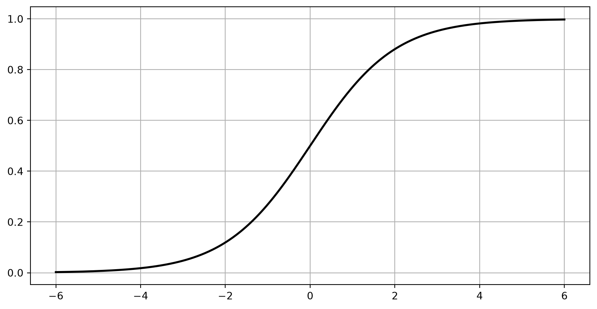

import numpy as np
import matplotlib.pyplot as plt
# Fonction sigmoïde
def sigmoid(t):
return 1 / (1 + np.exp(-t))
# Générer les valeurs de x
t = np.linspace(-6, 6, 400)
# Calculer les valeurs de y pour la fonction sigmoïde
y = sigmoid(t)
# Créer une figure et retirer les axes et la grille
fig, ax = plt.subplots()
ax.plot(t, y, color='black', linewidth=2) # Garder la courbe opaque
plt.grid(True)
# Définir un fond transparent pour la figure et les axes
fig.patch.set_alpha(0) # Fond transparent pour la figure
plt.show()Jupyter Notebook et Google Colab
CCSI4506 Introduction à l’intelligence artificielle
Marcel Turcotte
Version: août 31, 2026 13h51
Préambule
Objectifs d’apprentissage
- Écrire et exécuter un Jupyter Notebook.
- Exécuter un Jupyter Notebook sur Google Colab.
Prérequis
La maîtrise de Python est attendue.
Pour ceux qui ont besoin d’une remise à niveau, le tutoriel officiel sur Python.org est un bon point de départ.
Améliorez simultanément vos compétences en créant un Jupyter Notebook qui intègre des exemples et des notes du tutoriel.
Autres ressources :
Jupyter Notebooks
Un notebook est un document partageable qui combine code informatique, descriptions en langage clair, données, visualisations riches comme des modèles 3D, tableaux, graphes et figures, et contrôles interactifs. Un notebook, avec un éditeur (comme JupyterLab), fournit un environnement interactif rapide pour prototyper et expliquer du code, explorer et visualiser des données, et partager des idées avec d’autres.
Démarrage rapide

Exécuter Jupyter sur votre ordinateur
En supposant que le notebook est dans le répertoire courant, exécutez la commande suivante depuis le terminal.
De même, pour créer un nouveau notebook à partir de zéro,
Pourquoi?
Facilité d’utilisation : L’interface est intuitive et propice à l’analyse exploratoire.
Visualisation : La capacité d’intégrer des visualisations riches et interactives directement dans le notebook améliore son utilité pour l’analyse et la présentation des données.
Reproductibilité : Les Jupyter Notebooks sont devenus la norme de facto dans de nombreux domaines pour démontrer les fonctionnalités du code et garantir la reproductibilité.
Comment?
- Google Colab
- Installation locale
- Dans votre navigateur
- Notebook ou JupyterLab
- Visual Studio Code
- Dans votre navigateur
- Plus d’options, y compris JupyterHub (une version multi-utilisateurs)
Installer Jupyter (1/2)
Ces instructions utilisent pip, l’outil d’installation recommandé pour Python.
La première étape est de vérifier que vous disposez d’une installation Python fonctionnelle avec pip installé.
Installer Jupyter (2/2)
Installer JupyterLab avec pip :
Une fois installé, lancez JupyterLab avec
Exemples de Jupyter Notebooks
- 01_ottawa_river_temperature (Jupyter Notebook){download=“01_ottawa_river_temperature.ipynb”}
- 02_empty (Jupyter Notebook){download=“02_empty.ipynb”}
- 03_missing_library (Jupyter Notebook){download=“3_missing_library.ipynb”}
- 04_stock_price (Jupyter Notebook){download=“04_stock_price.ipynb”}
- 05_central_limit (Jupyter Notebook){download=“05_central_limit.ipynb”}
bibliothèques manquantes
Lancer 03_missing_library sur Colab.

04_stock_price
Lancer 04_stock_price sur Colab.

05_central_limit
Lancer 05_central_limit sur Colab.

Notes de Cours
Chaque cours est aussi fourni sous forme de Jupyter Notebook.
Notes de Cours

Prologue
Résumé
- Nous avons introduit des outils, notamment les Jupyter Notebooks et Google Colab.
Ressources
Références
Annexe : contrôle de version
Contrôle de version (GitHub)
Par défaut, les Jupyter Notebooks stockent les sorties des cellules de code, y compris les objets multimédias.
Les Jupyter Notebooks sont des documents JSON, et les images qu’ils contiennent sont encodées au format PNG base64.
Cet encodage peut entraîner plusieurs problèmes lors de l’utilisation des systèmes de contrôle de version, tels que GitHub.
Taille de fichier importante : Les Jupyter Notebooks peuvent devenir assez volumineux en raison des images et des sorties intégrées, entraînant des temps de téléchargement prolongés et des contraintes de stockage potentielles.
Incompatibilité avec le contrôle de version basé sur le texte : GitHub est optimisé pour les fichiers basés sur du texte, et l’inclusion de données binaires, telles que des images, complique le processus de suivi des modifications et de résolution des conflits. Les opérations traditionnelles de diff et de fusion ne sont pas bien adaptées pour gérer ces formats binaires.
Contrôle de version - solutions
Dans JupyterLab ou Notebook, Edit \(\rightarrow\) Clear Outputs of All Cells, puis sauvegardez.
En ligne de commande, utilisez
jupyter nbconvert --clear-output
ou
- Utilisez
nbdime, spécialisé pour les Jupyter Notebooks.
Annexe : gestion de l’environnement
Gestion de l’environnement
Important
N’essayez pas d’installer ces outils à moins d’être sûr de vos compétences techniques. Une installation incorrecte pourrait entraîner une perte de temps considérable ou même rendre votre environnement inutilisable. Il n’y a rien de mal à utiliser pip ou Google Colab pour vos travaux de cours. Vous pourrez développer ces compétences d’installation plus tard sans impacter vos notes.
Gestion des packages
La gestion des dépendances des packages peut être complexe.
- Un gestionnaire de packages répond à ces défis.
Différents projets peuvent nécessiter différentes versions des mêmes bibliothèques.
- Les outils de gestion des packages, tels que
conda, facilitent la création d’environnements virtuels adaptés à des projets spécifiques.
- Les outils de gestion des packages, tels que
Anaconda
Anaconda est une plateforme complète de gestion des packages pour Python et R. Elle utilise Conda pour gérer les packages, les dépendances et les environnements.
Anaconda est avantageux car il est livré pré-installé avec plus de 250 packages populaires, offrant ainsi un point de départ robuste pour les utilisateurs.
Cependant, cette distribution étendue entraîne une taille de fichier importante, ce qui peut être un inconvénient.
De plus, puisque Anaconda repose sur
conda, il hérite également des limitations et des problèmes associés àconda(voir les diapositives suivantes).
Miniconda
Miniconda est une version minimale d’Anaconda qui inclut uniquement conda, Python, leurs dépendances et une petite sélection de packages essentiels.
Conda
Conda est un système de gestion des packages et des environnements open-source pour Python et R. Il facilite l’installation et la gestion des packages logiciels et la création d’environnements virtuels isolés.
Des conflits de dépendances conflicts dus à des interdépendances complexes de packages peuvent obliger l’utilisateur à réinstaller Anaconda/Conda.
Encombré par des exigences de stockage importantes et des problèmes de performance lors de la résolution des packages.
Mamba
Mamba est une réimplémentation du gestionnaire de packages conda en C++.
Il est nettement plus rapide que
conda.Il consomme moins de ressources informatiques.
Il fournit des messages d’erreur plus clairs et plus informatifs.
Il est entièrement compatible avec
conda, ce qui en fait un remplacement viable.
Micromamba est un exécutable entièrement lié de manière statique et autonome. Son environnement de base vide garantit que la base n’est jamais corrompue, éliminant ainsi le besoin de réinstallation.
Complément à votre éducation
Marcel Turcotte
École de science informatique et de génie électrique (SIGE)
Université d’Ottawa